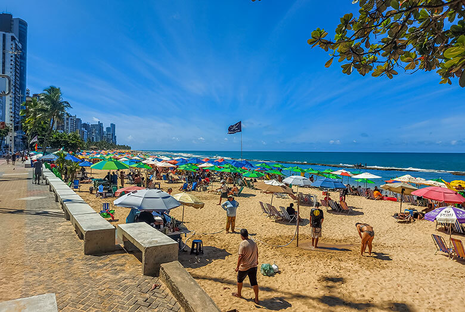
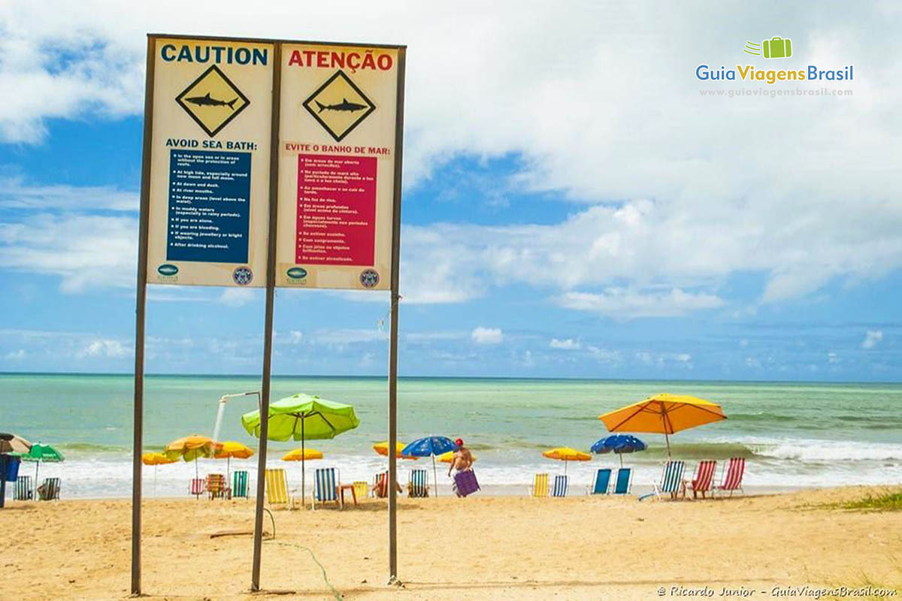
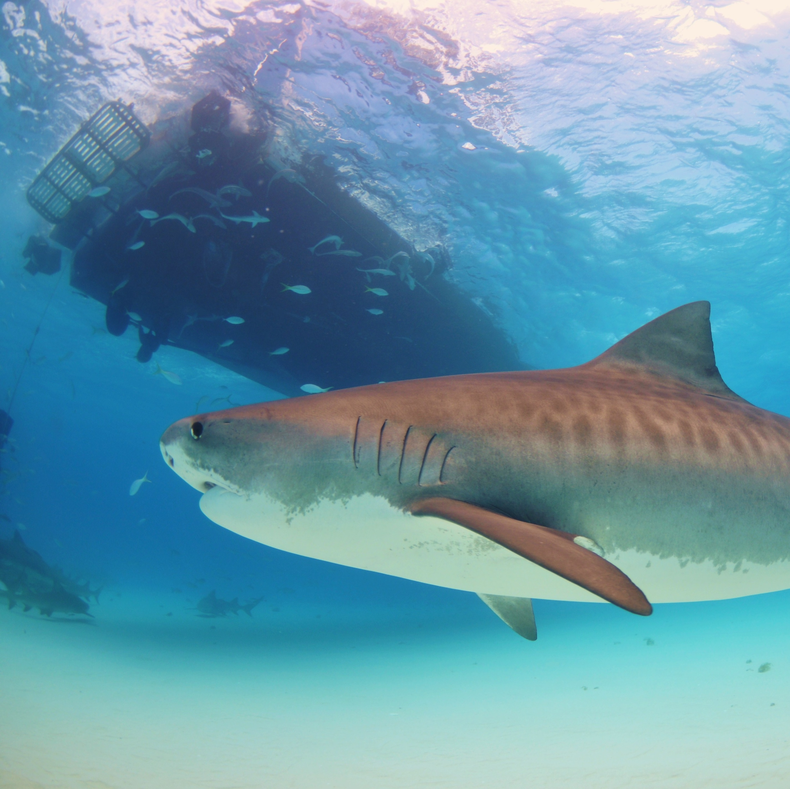

A Praia de Boa Viagem está localizada na zona sul de Recife, capital de Pernambuco. É uma das praias urbanas mais conhecidas do Brasil, famosa por sua longa faixa de areia clara, mar morno e paisagem encantadora. Sua orla é bastante movimentada, com calçadão, ciclovia e uma grande variedade de bares, quiosques, hotéis e restaurantes, o que a torna um ponto turístico importante da cidade.
O nome “Boa Viagem” surgiu devido à devoção dos antigos moradores à Nossa Senhora da Boa Viagem, cuja igreja histórica está localizada próxima à praia. A região ao redor da praia é bastante desenvolvida, com muitos prédios altos e uma vida noturna ativa. É um local muito frequentado tanto por turistas quanto por moradores locais, seja para tomar banho de mar, caminhar, andar de bicicleta ou simplesmente apreciar o pôr do sol.


Apesar de toda a sua beleza, a Praia de Boa Viagem também é conhecida pelos registros de ataques de tubarão, especialmente nas áreas de mar aberto, onde o banho não é protegido pelos recifes naturais. Esses incidentes começaram a ser registrados com mais frequência a partir da década de 1990.
Estudos apontam que as mudanças no ecossistema local, como a construção do Porto de Suape, interferiram na rota migratória dos tubarões, levando as espécies mais perigosas – como o tubarão-tigre e o tubarão-cabeça-chata – a se aproximarem da costa. Por esse motivo, há placas de alerta ao longo da orla e recomendações para que os banhistas não nadem em áreas fundas ou fora dos recifes, principalmente em maré alta.
Hoje, há um trabalho constante de monitoramento e educação ambiental, além de campanhas de prevenção para reduzir os riscos e garantir a segurança dos visitantes. Ainda assim, a maior parte da praia continua segura para o lazer, especialmente nas piscinas naturais formadas pelos arrecifes na maré baixa.